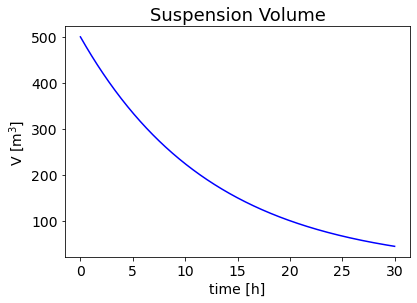
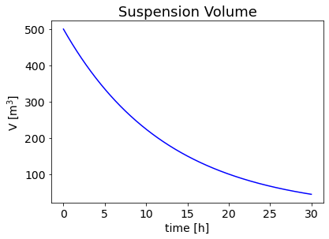

4. Mass balances in membrane separation processes¶
In this set of notes we will use an example ultrafiltration process to introduce material balances in different process configurations. We will consider a Batch, semi-Batch (feed and bleed) and continuous membrane processes to develop general ideas around material balances in membrane units. Every example will be introduced by a slight variant of a problem statement.
4.1 Batch¶
Problem Statement
500 l of fruit juice are concentrated from an initial solid-residue content of 0.05 kg/l to a solid-residue content of 0.2 kg/l through a batch microfiltration process. The total area of the membrane is of 20 \(\mathrm{m^2}\) and the flux of pure water through the membrane is captured by the empirical expression: \(J=BC^{-1} [m/h]\) with \(B=0.1\) where C is the solid residue concentration in kg/l. Compute the process time necessary to reach the target concentration.
from IPython.display import Image
fig = Image(filename=('./batch.png'), width=300, height=200)
fig

Solution trace
The global differential material balance (volume basis) reads:
\begin{equation} \frac{dV}{dt}=-J,A \end{equation}
where \(V\) is the volume in the concentrate loop, \(J\) the permeate flux per unit area and \(A\) the total membrane area. The permeate flux is defined by the expression: \begin{equation} J=BC^{-1} \end{equation} with \(B=0.1\).
Since the solid residue never leaves the retentate loop, the differential material balance on the solid residue reads: \begin{equation} \frac{dm}{dt}=0 \end{equation}
Which means that the total mass of solid residue is constant and equal to its initial mass: \begin{equation} m=m_0=V_0C_0 \end{equation}
The global differential material balance can thus be rewritten as: \begin{equation} \frac{dV}{dt}=-J,A=-\frac{B}{V_0C_0 }AV \end{equation}
\newpage
In this simple case it can be integrated analytically to compute the volume as a function of time: \begin{equation} \int_{V_0}^{V^{\prime}}\frac{dV}{V}=\int_0^{t^{\prime}}-\frac{B}{V_0C_0 }Adt \end{equation} \begin{equation} \int_{V_0}^{V^{\prime}}\frac{dV}{V}=\left[\ln{V}\right]^{V^{\prime}}_{V_0}=\ln\left(\frac{V^\prime}{V_0}\right) \end{equation} \begin{equation} \int_0^{t^{\prime}}-\frac{B}{V_0C_0 }Adt=-\frac{B}{V_0C_0 }At^\prime \end{equation}
Putting together both sides of the equation and substituting \(V^\prime\) with \(V\) for the sake of simplicity in the notation we get: \begin{equation} V(t)=V_0e^{-\frac{B}{V_0C_0 }At} \end{equation} which describes the time dependence of the volume in the batch membrane separator.
The concentration can thus be calculated as: \begin{equation} C(t)=\frac{m}{V(t)}=\frac{C_0V_0}{V_0}e^{\frac{B}{V_0C_0 }At}={C_0}e^{\frac{B}{V_0C_0 }At} \end{equation}
The process time necessary to obtain a solid residue concentration of 0.2 \([kg/l]\) is of 17.3 \([h]\)
Numerical solution
import numpy as np
import matplotlib.pyplot as plt
from scipy.optimize import fsolve
# Parameters:
N = 500 #number of points
time = np.linspace(0, 30, N)
A=20; #m^2
B=0.1;
C0=0.05;
V0=500;
C_specific = 0.2
#Operating Equation
C = C0*np.exp(B*A/V0/C0*time)
V = V0*np.exp(-B*A/V0/C0*time)
#Plotting
figure=plt.figure()
axes = figure.add_axes([0.1,0.1,0.8,0.8])
plt.xticks(fontsize=14)
plt.yticks(fontsize=14)
axes.plot(time,C, marker=' ' , color='r')
plt.title('Solute concentration', fontsize=18);
axes.set_xlabel('time [h]', fontsize=14);
axes.set_ylabel('concentration [kg/m$^3$]',fontsize=14);
figure=plt.figure()
axes = figure.add_axes([0.1,0.1,0.8,0.8])
plt.xticks(fontsize=14)
plt.yticks(fontsize=14)
axes.plot(time,V, marker=' ' , color='b')
plt.title('Suspension Volume', fontsize=18);
axes.set_xlabel('time [h]', fontsize=14);
axes.set_ylabel('V [m$^3$]',fontsize=14);
def equation(proc_time):
eq1 = C0*np.exp(B*A/V0/C0*proc_time) - C_specific
return eq1
process_time = fsolve(equation,[1])
print("The process time necessary to obtain a solid residue concentration of", C_specific, "[kg/l] is:", process_time, "[h]")
The process time necessary to obtain a solid residue concentration of 0.2 [kg/l] is: [17.32867951] [h]
 

4.2 Feed and Bleed¶
Feed and Bleed: Problem Statement
500 l of fruit juice are concentrated in 5 h of steady state operation from an initial solid-residue content of 0.05 \(kg/l\) through a feed and bleed process. The total area of the membrane is of 20 \(m^2\) and the flux of pure water through the membrane is captured by the empirical expression: \(J=BC^{-1} [m/h]\) with \(B=0.1\) where C is the solid residue concentration in kg/l. Is the steady state concentration of the retentate compatible with the specifics of 0.2 \(kg/l\)?
from IPython.display import Image
fig = Image(filename=('./feedandbleed.png'), width=300, height=200)
fig
Feed and Bleed: Solution trace
Also in this case the global differential material balance and the solid-residue material balance can be written as follows:
\begin{equation} \frac{dV}{dt}=Q_{IN}-J,A-Q_{OUT}=0 \end{equation}
\begin{equation} \frac{dm}{dt}=Q_{IN}C_{IN}-Q_{OUT}C_{OUT}=0 \end{equation}
At steady state \({dV}/{dt}=0\) as well as \({dm}/{dt}=0\). The two ODEs become then two algebraic equations that should be solved together to compute the steady state concentration. From the global material balance we get:
\begin{equation} Q_{OUT}=Q_{IN}-J,A=Q_{IN}-\frac{B}{C_{OUT}}A \end{equation}
and then, with some manipulations: \begin{equation} C_{OUT}=C_{IN}+\frac{AB}{Q_{IN}} \end{equation}
import numpy as np
import matplotlib.pyplot as plt
from scipy.optimize import fsolve
# data:
A=20;
B=0.1;
C0=0.05;
V0=500;
process_time=5;
Cout=C0+A*B*process_time/V0
print("The steady state concentration is", Cout, "[kg/l]")
The steady state concentration is 0.07 [kg/l]
4.3 Cascade configuration¶
Problem Statement
500 l of fruit juice are concentrated in 5 h of steady state operation from an initial solid-residue content of 0.05 kg/l through four membrane separation units characterised by a total membrane area of 20 \(\mathrm{m^2}\) each. The flux of pure water through the membrane is captured by the empirical expression: \(J=BC^{-1} [m/h]\) with \(B=0.1\) where C is the solid residue concentration in kg/l.
Is it more efficient to design a single stage configuration with four units in parallel or a cascade configuration with four units in series?
from IPython.display import Image
fig = Image(filename=('./cascade.png'), width=600, height=200)
fig

Cascade: Solution trace
Each stage can be treated like a single unit in which the feed stream corresponds to the retentate stream from the previous unit. We can thus define: \begin{equation} C_{OUT,i}=C_{IN,i+1} \end{equation} \begin{equation} Q_{OUT,i}=Q_{IN,i+1} \end{equation} where the index \(i\) identifies the stage.
The material balances for each stage at steady state can thus be written as: \begin{equation} \frac{dV}{dt}=Q_{IN,i}-n_iJ(C_{IN,i+1}),A-Q_{IN,i+1}=0 \end{equation}
\begin{equation} \frac{dm}{dt}=Q_{IN,i}C_{IN}-Q_{IN,i+1}C_{IN,i+1}=0 \end{equation} where \(n_i\) is the number of modules used in stage \(i\).
For each stage we can thus compute the steady state concentration and concentrate volumetric flow by solving sequentially the following equations:
\begin{equation}
C_{IN,i+1}=C_{IN,i}+n_i\frac{AB}{Q_{IN,i}}
\end{equation}
\begin{equation}
Q_{IN,i+1}=\frac{C_{IN,i}{Q_{IN,i}}}{C_{IN,i+1}}
\end{equation}
with \(i=1...N\) with \(N\) is the total number of stages.
Numerical Solution
The solution of a cascade composed of any number of stages, each formed by an arbitrary number of modules in parallel can be tackled sequentially through a simple cycle similar to the following:
import numpy as np
import matplotlib.pyplot as plt
from scipy.optimize import fsolve
# data:
A=20;
B=0.1;
C0=0.05;
V0=500;
process_time=5;
# The number of elements of this array corresponds to the number of stages.
# The value in each element is the number of modules per stage.
n=np.array([5, 4, 3, 2]);
CIN=np.append(C0,np.zeros(np.size(n)-1))
FIN=np.append(V0/process_time, np.zeros(np.size(n)-1));
# Input to the intermediate stages
for i in range(1,np.size(n)):
CIN[i]=CIN[i-1]+n[i-1]*A*B/FIN[i-1];
FIN[i]=CIN[i-1]*FIN[i-1]/CIN[i];
# Output concentration
Cout=CIN[np.size(n)-1]+n[np.size(n)-1]*A*B/FIN[np.size(n)-1];
print("The steady state concentration is", Cout, "[kg/l]")
The steady state concentration is 1.5444000000000002 [kg/l]
In order to answer the problem request one should solve the system for two different configurations. In the first, representing a single-stage configuration with four membrane units in parallel, the number of stages should be set to \(N=1\) and the number of units in the first stage \(n_1\) to 4.
# The number of elements of this array corresponds to the number of stages.
# The value in each element is the number of modules per stage.
n=np.array([4]);
CIN=np.append(C0,np.zeros(np.size(n)-1))
FIN=np.append(V0/process_time, np.zeros(np.size(n)-1));
# Input to the intermediate stages
for i in range(1,np.size(n)):
CIN[i]=CIN[i-1]+n[i-1]*A*B/FIN[i-1];
FIN[i]=CIN[i-1]*FIN[i-1]/CIN[i];
# Output concentration
Cout=CIN[np.size(n)-1]+n[np.size(n)-1]*A*B/FIN[np.size(n)-1];
print("The steady state concentration is", Cout, "[kg/l]")
The steady state concentration is 0.13 [kg/l]
In the second the number of stages should be set to \(N=4\), each of the stages being assembled as a single unit (\(n_i=1\) for \(i=[1, 4]\)).
# The number of elements of this array corresponds to the number of stages.
# The value in each element is the number of modules per stage.
n=np.array([1, 1, 1, 1]);
CIN=np.append(C0,np.zeros(np.size(n)-1))
FIN=np.append(V0/process_time, np.zeros(np.size(n)-1));
# Input to the intermediate stages
for i in range(1,np.size(n)):
CIN[i]=CIN[i-1]+n[i-1]*A*B/FIN[i-1];
FIN[i]=CIN[i-1]*FIN[i-1]/CIN[i];
# Output concentration
Cout=CIN[np.size(n)-1]+n[np.size(n)-1]*A*B/FIN[np.size(n)-1];
print("The steady state concentration is", Cout, "[kg/l]")
The steady state concentration is 0.19208000000000003 [kg/l]
The cascade configuration allows for a more efficient process since it allows to obtain a larger concentration with the same number of modules.